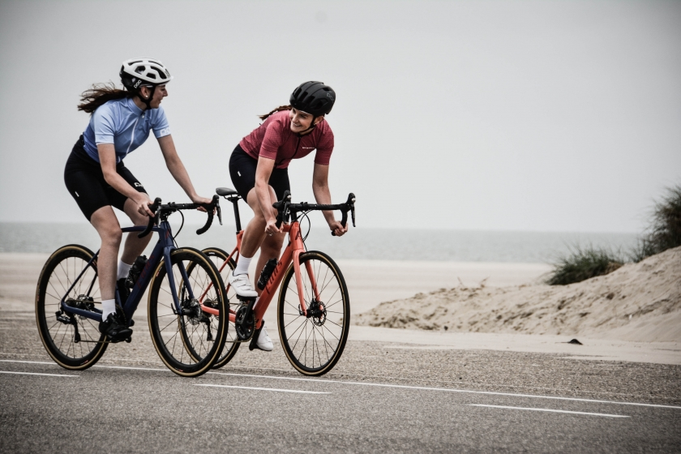

Climate change is no longer a future concern, but a pressing reality with
far-reaching and catastrophic impacts that we can already see. Rising sea
levels are threatening coastal communities, extreme weather events are
becoming more frequent and destructive, and the planet's biodiversity is
being pushed to the brink of collapse. These changes are disrupting ecosystems,
economies, and lives across the globe. However, despite the gravity of the
situation, we still have a window of opportunity to mitigate further damage.
Collective and individual actions, if taken seriously and urgently, can alter
the trajectory of this global crisis.
Addressing climate change requires a multifaceted approach, beginning with reducing
carbon emissions and transitioning to renewable energy sources like wind and solar
power. Small but impactful changes, such as cutting down on plastic consumption,
conserving water, and supporting policies that prioritize sustainability, all
contribute to the solution. Every decision we make today has the potential to
secure a more livable planet for future generations. This isn't just about saving
the Earth—it's about preserving our own future, our communities, and the ecosystems
we rely on. The choices we make now will determine the quality of life for those
who come after us.

To prevent climate change, it’s essential to focus on both individual
and collective actions. One of the most impactful ways is to reduce
greenhouse gas emissions by transitioning to renewable energy sources
like solar, wind, and hydropower. Governments, industries, and
individuals alike can invest in clean energy technologies, making them
more affordable and accessible for everyone. At the individual level,
reducing energy consumption through energy-efficient appliances, smart
thermostats, and proper insulation can significantly lower carbon footprints.
Transportation is another major contributor to climate change. Opting
for public transportation, cycling, walking, or switching to electric
vehicles can drastically cut emissions. Reducing air travel, especially
frequent short flights, also makes a difference.

Finally, raising awareness and advocating for climate-friendly policies are
vital steps. Support initiatives that push for stricter emissions regulations,
incentives for green energy, and reforestation programs. By making small,
conscious choices and supporting broader systemic changes, we can collectively
slow climate change and create a more sustainable future for generations to come.